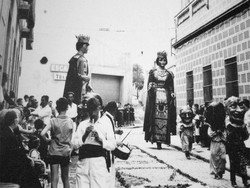
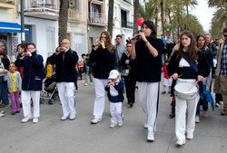

Cada gegant, el seu ball
Els gegants de Badalona no només volten: ballen coreografies pròpies, moltes sobre havaneres.
Com ballen els gegants
Ja sigui perquè gran part dels fundadors de la colla provenien del món de l’esbart o bé perquè la Colla de Geganters de Terrassa va ajudar-nos a fer les primeres passes, des de sempre hem lluitat per poder lluir ballant els gegants fent que cada parella tingués la seva pròpia dansa, creant coreografies amb tres, quatre o cinc parelles de gegants i impulsant que a arreu del país aquestes figures majestuoses no es dediquin només a voltar, sinó que hi hagi una feina i un esforç al darrere per a enaltir-les tot fent balls coreografiats.
El primer ball que es dansà a Badalona va ser el “Ball de Gegants i Capgrossos de Badalona”, amb música de Jordi Fàbregas i coreografia de Jan Grau. Fou estrenat el 1982 coincidint amb l’arribada dels gegants moros, en Ripal i la Brunel·la del Mar, i els nou capgrossos. En aquella època no hi havia una colla de geganters estable a la vila i els encarregats de fer ballar els gegants era un grup de teatre. En Jan Grau, aleshores geganter de Terrassa, va ensenyar el ball als joves geganters i aquests el dansaven cada vegada que els gegants trepitjaven el carrer.
Quan l’any 1986 va néixer la Colla de Geganters de Badalona es començava a gestar una nova manera de veure el món dels gegants que de mica en mica anava arrelant a molts punts de la geografia catalana (entre els quals hi havia la nostra vila): els gegants havien de ballar a plaça! Aquest procés ja havia començat feia 4 anys amb el “Ball de Gegants i Capgrossos de Badalona”, però la colla tenia ganes de fer noves coreografies, de provar noves tècniques… de fer volar la imaginació.
Després d’esmerçar-se per a fer nous balls, com la “Gironella” o la “Jota Tortosina”, l’any 1989 es va estrenar un ball nou pels gegants Anastasi i Maria. Al so d’una havanera de Josep Olivella, la “Coqueta”, els gegants centenaris fan tot un seguit de passades d’esquena molt tècniques on el ballador no veu l’altre gegant i només té com a referència els voltadors i les puntes. És una dansa que, encara avui, deixa a tothom bocabadat pels moviments que s’hi poden veure.
Tres anys més tard, al 1992, es va estrenar un ball de parella per als gegants Ripal i Brunel·la del Mar anomenat la “Riprunel·la”. Es va agafar una melodia medieval i entre tota la colla es va escriure la coreografia on el gegant pren el paper de pirata sarraí tot dansant amb pas de soldat, mentre la geganta, com a pubilla que és, es mou amb molta dolçor. Com a curiositat s’ha de dir que amb aquest ball es guanyà el primer Concurs de Balls de Gegants de Catalunya, celebrat a Móra d’Ebre al 1994.
En aquella època es va fer un gran salt i es va estrenar el primer ball “multitudinari”. Es tracta del “Vals de Novençans”, on totes les parelles de gegants de la ciutat ballen a la vegada. Aquest fet no s’havia vist mai a Badalona i, comptades vegades a la resta de Catalunya. Però aquest no va ser l’únic ball conjunt! L’any 1998 s’estrenà a la plaça de la Vila el “Ball de Cort”, on ballen les 4 parelles de gegants de Badalona amb una coreografia realment espectacular.
Amb el primer Badagegants l’any 1997, en Robert Arruego va fer un ball per tal que tots els gegants convidats a la trobada poguessin ballar a la vegada, el “Renaixement Gegant”. I des de llavors cada any a la Plana s’ha vist com desenes de gegants vinguts de tot arreu dansaven aquesta coreografia. L’únic requisit és que el nombre de gegants que ballin ha de ser un múltiple de quatre (per tal que quadri la coreografia)! És un ball de germanor, és a dir, cada gegant badaloní té com a parella un convidat.
L’any 1999, durant la Nit de Sant Anastasi i tot just un any després de l’estrena del Ball de l’Àliga, es va dansar per primera vegada “la Melicana”, l’havanera dels gegants Jeroni i Badamar. Probablement, aquest és un dels balls més aplaudits a plaça. L’any 2015, amb la participació de l’entitat al Concurs de Balls de Gegants d’Igualada, “la Melicana” es va endur el primer premi.

Sempre s’ha intentat que cada parella de gegants tingués el seu ball propi, i això es va aconseguir l’any 2001 amb “l’Emilio”, el ball d’en Ferrer de Gualbes i n’Elionor de Santcliment, coreografia guanyadora del II Concurs Nacional de Balls de Gegants organitzat per l’Agrupació de Colles de Geganters de Catalunya a Amer l’any 2018. Ells, n’Anastasi i na Maria i en Jeroni i na Badamar, tenien la seva havanera, però en Ripal i na Brunel·la del Mar encara ballaven la “Riprunel·la”. Va ser en motiu del seu 30è aniversari que es va escriure una nova coreografia per a ells dos, amb una peça anomenada “Vestida de Nit”, de Càstor Pérez.
Cal remarcar que no és casualitat que ara mateix els gegants de Badalona ballin havaneres. La nostra vila ha estat un poble maresmenc amb una forta vinculació a la vinya, però sobretot al mar. I quin tipus de música, més mariner que qualsevol altra, tenim a casa nostra? Sens dubte són les havaneres.

El Valset de Badalona
Sens dubte, el ball històric per excel·lència és el Valset de Badalona. Aquest va ser el primer que van ballar en Ripal, na Brunel·la del Mar, n’Anastasi i na Maria. De fet, abans que nasqués la Colla de Geganters de Badalona ja es dansava! Així doncs, l’any 1983 es va estrenar el Ball de Gegants i Capgrossos de Badalona, dins del qual hi ha el Valset.
És un ball senzill i lineal i va ser el que va propiciar la creació de noves coreografies. Comença amb una toc d’atenció i, tot seguit, els gegants es creuen dues vegades tot saludant-se en el moment que es troben l’un amb l’altre. A continuació, comença el ball pròpiament dit i la parella s’acosta fent pas de valset fins que són a tocar. Entre persecucions i voltes encarats les figures s’apropen i s’allunyen tot voltant o marcant el pas, fins que el ball acaba amb una boja (ràpides voltes sobre un mateix). Us convidem a donar un cop d’ull a la partitura i a la coreografia del ball:
I us deixem amb el vídeo del “Valset de Badalona” que vam ballar amb les 4 parelles de gegants de la Ciutat, el Follet i la Dimonieta el 22 d’octubre de 2011 a Can Fradera, durant l’acte de celebració dels 25 anys de colla.
La música i els gegants
Des dels seus inicis, els gegants de Badalona havien anat sempre acompanyats d’un flabiolaire i un timbaler els quals eren els encarregats d’entonar les músiques. De fet, als pressupostos per a la Festa Major de l’any 1907 s’hi contempla un petit sou de 51 pessetes per als “porta-nanos” i el “fluviolé”, d’aquí que en puguem assegurar la seva existència des de principis del segle passat.
Amb el transcurs dels anys el timbal fou substituït per un tamborí i d’aquesta manera trobem imatges dels gegants ballant pels carrers de la vila acompanyats pel flabiol i el tamborí.
Aquesta tradició es perllongà al llarg del temps fins als anys setanta. A partir de llavors van començar a aparèixer els grallers, malgrat que encara no formaven part de la colla ja que ni tan sols existia.
Amb la formació de la nostra entitat l’any 1986, es va començar a crear un grup de músics que de mica en mica anava creixent fins a ser més d’una quinzena de grallers i caixers.


Els grallers i els caixers de la colla
Actualment la música la posen el grup de músics de la Colla de Geganters de Badalona, format per una bona colla de grallers i una caixera que ens acompanyen a cada sortida que fem.
Tot i això, de vegades canviem les gralles per tarotes, flabiols o sacs de gemecs i la caixa per un tamborí, i és que la varietat musical no deixa de ser una de les riqueses de la nostra cultura tradicional.
A voltes fem ballar els gegants amb música a càrrec d’una cobla de sardanes o d’algun grup de música tradicional com La Banda d’en Vinaixa, el Grupet o els Ministrils del Raval, de Terrassa. Fins i tot, quan l’Àliga o n’Anastasi i na Maria entren dins l’església de Santa Maria per l’Ofici de Festa Major han arribat a ballar amb música de flautes travesseres, orgue o violoncel.